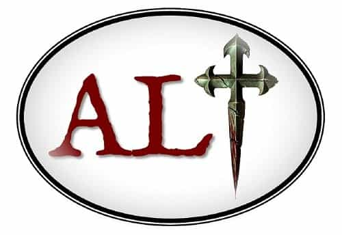
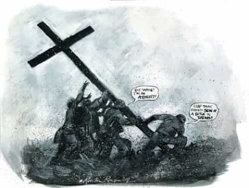
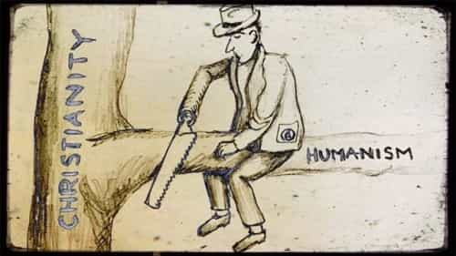
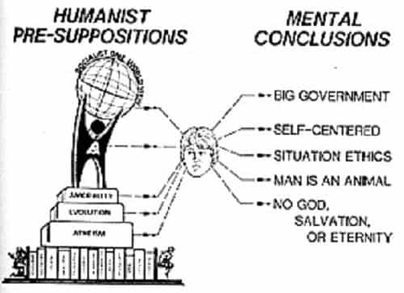

On the 26th of May, Return of Kings published my article The 21 Theses of Alt-Christianity. In that article, I presented the case for an idea called Alt-Christianity, a new Christian mindset which focuses on several core concepts that are all too often ignored by this generation of Christians.
First, Alt-Christianity is a traditionalist movement of the political right, and it is an alternative to the corrupt Churchianism which shrouds much of modern Christianity. Alt-Christianity is also offensive both in nature and initiative; it is proud of Christianity and does not back down from a fight, even as it uses all the resources at its disposal for that fight.
Next, Alt-Christianity believes that traditional Western Civilization is the best civilization that Man has ever created, and Alt-Christianity also holds that orthodox Christianity is an integral part of that civilization. As such, and in the interests of supporting Western Civilization, Alt-Christianity supports the foundations of Christianity itself, which are the patriarchy, the family, Christian apologetics, and a face-value acceptance of the morals and teachings of the New Testament.
Alt-Christianity is also anti-globalist and nationalistic, as well as a movement that recognizes the value and primacy of identity. Furthermore, Alt-Christianity supports the right of self-determination to all ethno-ideological/religious groups, and it promotes secession as a means to ease tensions between groups. Additionally, Alt-Christianity rejects the idea that Church and State should be separated; it also rejects the false myth of human equality or human perfectibility.
Finally, Alt-Christianity is a masculine movement, which is to be led by men, and in so doing, Alt-Christianity values the masculine nature of the Christ who overturned tables and was intellectually bold against his enemies and detractors.
Now, the details of each of the various theses of Alt-Christianity can be read in the previous article. However, in that past article, a good deal of interesting questions and comments were generated. And those thought-provoking questions, as well as the thought-provoking questions implied in various comments, all deserve an answer, which is the purpose of this current article. So, let’s get started.
One of the main issues raised against the idea of Alt-Christianity was that Christianity does not need any further divisions, which is something that embracing Alt-Christianity could cause. And to a large extent, it is true that Christianity would not benefit from further divisions. However, Alt-Christianity is not a new form of Christianity; it is not a new denominational sect. In fact, if anything, Alt-Christianity seeks to return Christians to their orthodox cultural and political positions, as articulated and demonstrated throughout hundreds of years of past Christian history.
At most, Alt-Christianity is a new Christian mindset. It is a new way for modern Christians to think. It asks Christians to focus on Christian ideas which have been undermined in the current social era, but it does not ask Christians to form a new set of beliefs. After all, everything that the Alt-Christian believes can be justified and supported through scriptural passages and 2000 years of Christian tradition.
In the end, the best way to view Alt-Christianity is as an informal organization of denominationally-diverse but politically and culturally like-minded Christians who find unity through their embrace of nationalism, traditional morality, and right-leaning politics. And this type of political and cultural unity among modern traditionalist Christians—as opposed to theological unity—is what is sorely needed today.
After all, unlike hundreds of years ago, the disputes in the West are now moral, not theological, and as such, the traditionalist Protestant and traditionalist Catholic (and even the traditionalist unbeliever) have a greater reason to unify together rather than each separately unifying with the liberal portions of their denominations.

Ultimately, there is no absolute need for Alt-Christianity to be called Alt-Christianity. It could, for example, be called Hard-Christianity, or Masculine-Christianity, or Neo-Christianity, or Reactionary-Christianity, or even Followers of the Way (Acts 9:2 & 22:4). But, in this present age, there are good pragmatic reasons to call this set of ideas ‘Alt-Christianity’.
First, Alt-Christianity is meant to be an alternative to many modern manifestations of Christianity, and so the ‘alt’ prefix clearly articulates the fact that this new Christian mindset is an alternative to the cucked, Churchian, and progressive mindset which pervades many self-described Christians today.
Second, Alt-Christianity is also a solid label because the ‘alt’ prefix links this new Christian mindset to the Alt-Right, the Alt-West, and the Alt-Lite; this is precisely the type of link that Alt-Christianity wants to make, for it wishes to show itself to be as different from mainstream Christianity as the Alt-Right is different from mainstream conservativism.
Yes and no. In a way, slapping the ‘alt’ label onto Christianity does “re-brand” it. However, the main reason for attaching the ‘alt’ prefix to the term Christianity is to reinvigorate interest in Christianity. For example, consider a young person on the Right who may have already dismissed modern Christianity as not helping in the fight for Western Civilization; when that young person hears the term Alt-Christianity, he may take a second look at this “type” of Christianity and may then realize that Christianity is much more supportive of Western Civilization than he originally thought.
And so, if “branding” Christianity as Alt-Christianity can merely do that—meaning, if it can just get a number of people to reconsider Christianity who might have otherwise dismissed it—then the ‘Alt-Christianity’ label will have been a success.
At the same time, branding a certain Christian mindset as ‘Alt-Christianity’ also gives a proper name to the general ideas that many traditionalist and reactionary Christians already hold, but which have not yet been properly labeled. Thus, Alt-Christianity can serve that purpose as well.
Some commentators argued that Christianity and the “red-pill” are incompatible, and thus Alt-Christianity is undermined by the fact that it endorses the red-pill. Now, if being red-pilled is defined in a certain way, then it could be claimed that Christianity and the red-pill are incompatible. But at its fundamental level, being ‘red-pilled’ is simply the description of a person who has accepted truth over illusions, not just concerning sexual dynamics, but concerning all of reality. And when understood in this way, not only is Christianity fully compatible with the red-pill, but Christianity is a red-pill!
After all, to be a Christian is to accept the harsh truths that Satan is the ruler of this world, that the world will hate you and persecute you, that you might have to separate from your own family to be a Christian, and so on and so forth.
So, when the red-pill is simply understood as a willingness to accept the truth about reality no matter how hard that truth might be, then it is utterly clear that there is no issue between Christianity and the red-pill. After all, as a very important Christian once said: “You will know the truth, and the truth will set you free.” (John 8:32)

Another issue that was raised concerning the tenets of Alt-Christianity was its rejection of an ultimate separation of Church and State. But is this tenet, in fact, a negative?
First, note that Alt-Christianity does not necessitate the creation of a theocracy, but it does reject an ultimate separation of Church and State. For example, removing religious symbols and practices from political and social institutions is an ultimate separation of Church and State, and Alt-Christianity rejects such maneuvers; but that does not mean that Alt-Christianity necessarily endorses or requires that religious clergy have some type of formal political power. So, this distinction needs to be kept in mind.
Second, the idea that there is such a thing as a genuine separation of Church and State is a myth. After all, a Church—or a specific religion, in other words—is fundamentally just a worldview which answers life’s most critical questions and which dictates the way that people look at the world. Consequently, no one is without such a guiding worldview, not even a State, and definitely not the State’s functionaries.
In reality, Church and State are not separate; the only question is which ‘Church’ is informing the State. At present, the worldview largely guiding Western States is a sort of liberal secularism which directs the way in which a State makes its decisions and acts.
Thus, the idea of an ultimate separation of Church and State is rejected because it is a myth, just as the idea of genuine religious freedom is a myth; after all, in our religiously “free” state, religious Aztecs, for example, are obviously not free to sacrifice other human beings, nor can Mormons or Muslims be polygamous, and so their religious freedom is evidently being curtailed to a certain degree. So, Alt-Christianity rejects an ultimate separation of Church and State, along with religious “freedom”, because these things are as much of a myth as equality and utopianism are.
Furthermore, the idea that unity between Church and State is a bad thing is itself questionable, at least in cases where the people of the nation are dependably religious. Note, for example, that the current governments of Poland and Hungary strongly assert their Christian identity, and yet these two countries have arguably the sanest governments in all of Europe, at least when it comes to nationalism, Islam, immigration, and so on.
Finally, also note that a further reason not to separate Church and State in the case of Christianity is due to what we might call Christ’s First Law, which is that the world hates Christians, and so wherever Christians are not culturally and socially dominant, they will be persecuted and discriminated against.
History bears this out: after all, the Roman Empire persecuted Christians; Jews persecuted Christians; Muslims persecuted (and still persecute) Christians; Communists persecuted (and still persecute) Christians; Hindus persecute Christians; Asian cultural groups persecuted Christians, and so on and so forth. Consequently, it is for the very protection of Christians that we must reject the false concept of a separation of Church and State.

Alongside all the other comments about Alt-Christianity, there were a number of remarks essentially arguing that the best way forward would be to actually drop Christianity and simply adopt secular-humanism as the way forward for the West. But there are numerous reasons why this idea is inadvisable.
First, secular-humanism is false, and Christianity is not, which is a critical reason in and of itself to accept Christianity over secular-humanism. Second, many of the principles of secular-humanism are largely incoherent, and thus cannot form the foundation for a solid worldview. Third, modern secular-humanism is as cucked, if not even more cucked, than modern Christianity is.
For example, many secular atheists and agnostics are heavily left-leaning, so even just in practical terms, secularists are opponents of the Right and of Alt-Christianity; there may even be something to the secularist mindset that predisposes the secularist towards progressivism and State-worship as a God substitute.
Furthermore, if you examine some of the past manifestos of the secular-humanists, you immediately notice that they contain both implicit and explicit appeals to progressivism, globalism, and so on. Again, these ideas are not of the Right, and they are the very ideas that we are fighting against. So adopting secular-humanism is like adopting the enemy’s ideology while trying to defeat that very same enemy. It’s absurd.

Finally, look at many highly secular / non-religious countries in the West: how are Sweden, Britain, Germany, and France doing when it comes to making sound decisions about Islam, immigration, and so on? Not too well, and definitely worse than religious countries like Poland and Hungry are doing. Maybe this will change, but at present, this fact is a strong indication that secular-humanism is not the answer to the West’s problems. And, quite frankly, given the religious nature of human beings, secular-humanism will very likely never be the answer to a nation’s cultural problems.
Finally, some questions were raised concerning Alt-Christianity’s position on Israel and on people of Jewish ethnicity/heritage. To this, I would simply reiterate Alt-Christianity’s theses 9 and 12, which explain that Alt-Christianity supports the right of all ethno-ideological and/or religious groups to exist as distinct groups, but Alt-Christianity is opposed to the unrequested rule, domination, or excessive influence (by any means) of any ethnic and/or religious group over another.
What this means is that Alt-Christianity is entirely in favor of a Jewish state for Jews, just as it is entirely in favor of ensuring that Jews do not have undue influence over non-Jewish nation states. And this, I contend, is an entirely sound position.
So hopefully this article has answered a number of further questions about Alt-Christianity. And while I know that I did not address all the questions and concerns which were raised concerning the concept of Alt-Christianity, I hope that I answered enough of them to provide everyone a better understanding of what Alt-Christianity is.
Read More: The 21 Theses of Alt-Christianity